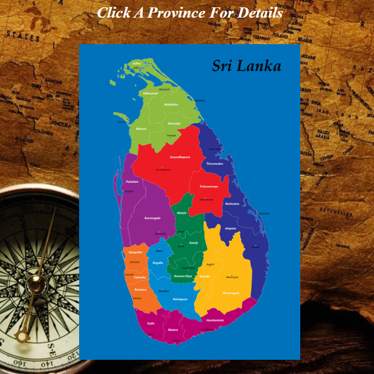

• Passionate about IT and technology, I am a dedicated professional with a strong background in web development. Holding a Web Development NVQ4 certificate from VTA Thalalla and currently pursuing an IT diploma at VTA Matara, I am well-versed in creating dynamic and user-friendly websites. • With additional expertise in video editing and graphic design, I bring a creative edge to technical projects. My 6-year tenure at Dam Recordz Studio allowed me to hone my multimedia production skills and produce high-quality content. as well I'm leveraging my expertise to educate IT students through the Dam IT Academy YouTube channel • I am actively seeking opportunities in the IT field, with a focus on web development and related roles. Let's connect and explore how my skills and experience can contribute to your team.
• Virtual journey through the beautiful island of Sri Lanka . This map provides an immersive experience, allowing you to explore the diverse provinces of this enchanting country.
• IT knowledge unfolds through engaging and insightful video tutorials. My mission is to empower IT students with the skills and expertise they need to thrive in the dynamic world of technology.
• This is the Latest Official Music Video Of Dam Recordz © 2023
• You can reach me at: dinidurasanjana@email.com